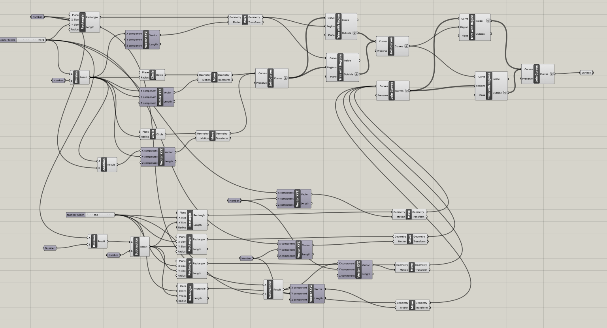

A2: Parametric Modelling with Grasshopper
by Kefeng Wang in HCDE598
This is the screenshop of the overview in the Grasshopper. There are five steps of making the shape shown below.

this is also the outcome I would used to print in the Adobe AI.The first step is to create the rectangular and
move it away from the y-axis. That space is for the semicircle.
The second step is to create two circles on the each side of the rectangular.
Then, using the TRIM function creates two semicircles; makes the semicircles and rectangular together.

Next step is to create four small rectangulars. Two are on the upper side, and two are on the bottom side.

The fourth step is to group these four rectangular together and trim them with outline made in last step.
The last step is to make the joint curves into surface.
You can download my Rihno and Grasshopper file from here.